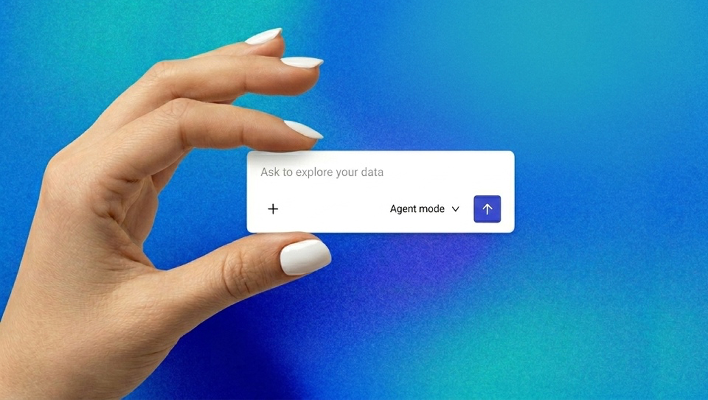
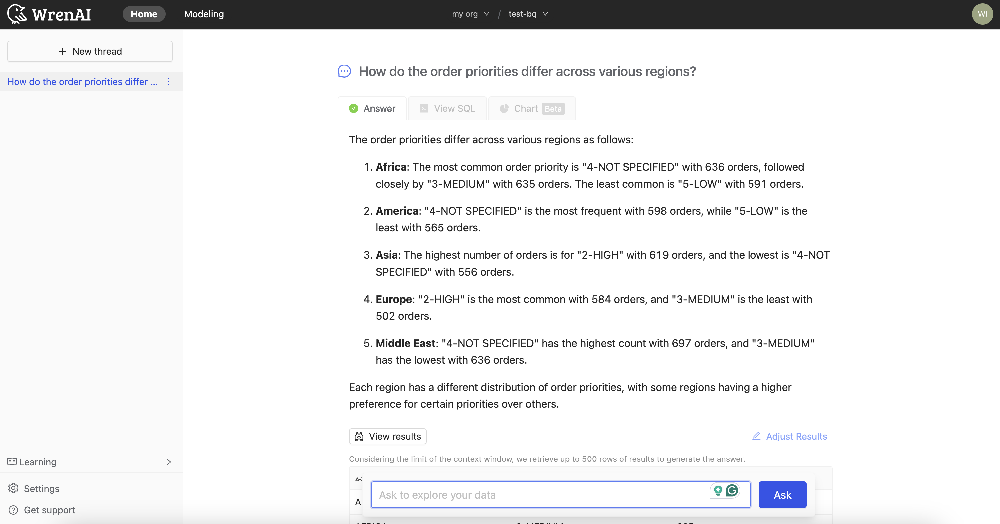
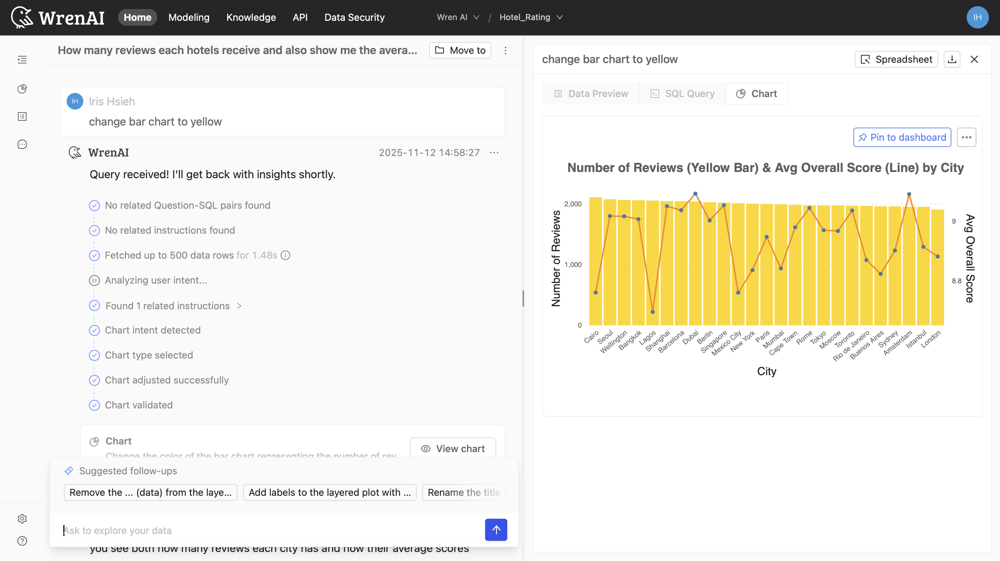
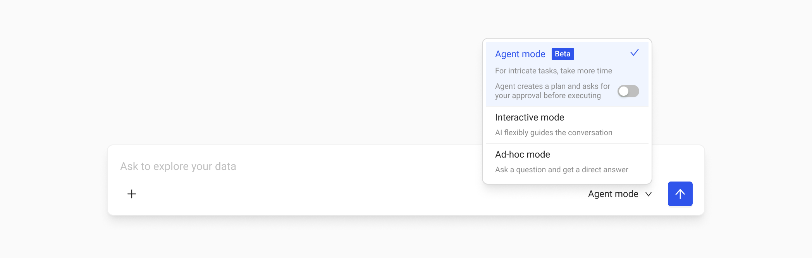

Preface
In AI-driven Business Intelligence, the hardest challenge was never "how to generate SQL", it was "how to earn trust." As senior product designer at Wren AI, I led the transformation from traditional conversational patterns into the Agent era. What I found: users sit between two extreme mental models, the freedom to explore, and the precision to control. This case study unpacks how three generations of architecture let us close the trust gap that a linear pipeline left behind.
My Role
Sole designer, user researcher, and PM. I owned the Langfuse + PostHog analysis, the end-to-end Agent UX, the mode strategy, and the post-launch hypothesis verification framework.
Company & Timeframe
Wren AI · 2026
I analyzed tens of thousands of Langfuse traces across nearly a thousand projects from early 2026. Three distinct technological strata surfaced inside the product, more than version upgrades, they reveal three different design philosophies and the historical arc of AI's evolution.
Gen 1 · Ad-hoc Mode (2023–2024)
The first generation was a classic linear pipeline, one-shot in, one-shot out, like a vending machine: feed it a precise instruction, and it returns SQL. Even today, despite a failure rate around 19.5%, the 11% of active projects still living in this mode drive nearly 60% of total traffic. These power users would rather tolerate failing one out of every five queries than give up direct control over the SQL.

Gen 2 · Interactive Mode (2025.09)
The second generation layered memory on top of the linear pipeline, what we called True Thread Context. Users no longer had to restate background with every question; the historical context carried forward, making continuous analysis possible. That layer pushed the error rate down to a near-perfect 0.29%, and proved that conversation can absorb, and quietly correct, the small slips a pipeline makes along the way.

Gen 3 · Agent Mode (2026)
The third generation tore down the rigid pipeline entirely, replacing it with a multi-agent, skill-based system. Multiple agents collaborate dynamically around the user's current intent, pulling together the strengths of the first two generations, the resilience of conversation and the precision of technical execution.

I analyzed tens of thousands of Langfuse traces and ran deep research on 89 active users, and found the product trapped in a gap between its technical architecture and real user intent. The study revealed that the legacy linear architecture wasn't just throttling performance; it was misreading what users actually wanted.
Insight 01 · The Expert Paradox, the more expert, the more frustrated
The data exposed a counter-intuitive pattern: expert users ran into more friction than beginners. I named it the Expert Paradox. These active users drop raw schema field names straight into their prompts, their underscore density runs about 12× higher than trial users. Yet the moment they type something as precise as BUFF_GAME_ACCOUNTS, the linear pipeline collapses if it can't match the data model (MDL) exactly.
In fact, over 95.9% of Ad-hoc failures concentrate in NO_RELEVANT_SQL and NO_CHART. The legacy architecture had no room to clarify or guide once technical detail got messy, and that's exactly where experts live.
Insight 02 · Identity Decode, 89 users reveal what Ad-hoc is really for
To understand the motive behind the data, I ran a deep survey of 89 active users to decode their mode-switching behavior. The finding: forcing a choice before typing is a heavy cognitive tax, 25% of users couldn't even articulate the difference between the two modes.
The more shocking finding: 62.5% of users switched to Ad-hoc not to access a different analysis surface, but to "inspect the SQL logic" or "debug." In users' minds, Ad-hoc was no longer a standalone analysis entry, it had become a Debug Lane for verifying results. The survey also overturned the "keep old modes as a fallback" assumption: only 2% of users switched modes because of system stability.
The pivot · From "mode switching" to "control sovereignty"
The data pointed to a clear direction: users wanted control, not a mode switch. Rather than patch a leaky linear pipeline, we merged the two generations outright. The new Agent Mode inherits the conversational resilience of Interactive, while turning Ad-hoc's debug needs into a built-in skill, so experts get automated analysis and keep absolute sovereignty over the underlying data logic.
Rather than simply killing old features, we performed a deep technical and design integration of two generations of hard-won experience.
Drawing from Interactive Mode: Conversation builds patience
From Interactive Mode, we learned that conversation gives users the patience to tune results. Agent Mode uses a series of Checkpoints (pre-selected answer panels) to turn data exploration from a one-shot attempt into a rhythmic, output-guaranteed loop. When users submit precise but ambiguous fields, Agent no longer throws NO_RELEVANT_SQL; it asks to clarify, converting potential crashes into a successful guided flow.
Transforming Ad-hoc Mode: Debug experience as a built-in skill
The transparency users previously had to switch modes for, we turned into a core capability of Agent through a Skill-based architecture. Addressing that 62.5% demand, we built the debug experience directly into how Agent operates. Users can now customize skill execution parameters on demand, and every SQL generation and reasoning path is fully transparent and queryable in natural language.
Users often arrive with a clear goal but struggle to phrase the precise question. When a business user enters with a vague intent like "explore this data", Agent's job is no longer to guess, it's to guide.
I designed a progressive confirmation flow: at every fork that would change the outcome, the system surfaces a single-select panel (analysis type, time dimension, segmentation). Each panel is a Checkpoint that moves the analysis forward, not a dead-end that blocks exploration, and a Skip option preserves the freedom experts need alongside the guidance newcomers want.
No related Q-SQL pairs, Analyzing user intent.When an Agent task runs for minutes, the 62.5% who used to open Ad-hoc for SQL visibility need an audit path inside Agent. Journey B gives them audit-grade transparency: a streaming thinking trail of primitives (spinner → checkmark), each expandable to the raw query or reasoning. The final answer carries a Receipt, a collapsible trail of every decision and the SQL that supported it. Debug without leaving the conversation.) with a goal, not a question. The agent now has more latitude, but also more responsibility to show its work. Instead of select panels, this journey uses inline clarifying questions and expandable reasoning steps. Each thinking step can be unfolded to reveal the plan behind it. The final report streams in, with feedback controls attached.
/generate-report with a business goal.Reading schema, Drafting SQL, Executing query. Each step expands to the underlying primitive., Executing tool Ask User Question.What we ultimately shipped was the soul of the Strict Auditor carried inside the body of a lightweight conversation.
SQL inspection and logic debugging are no longer foreign objects living outside the experience, they become reasoning receipts available on demand. Removing Ad-hoc was an experiment in trust migration: when we successfully blocked errors at the intent stage and surfaced a smooth, transparent trail at the execution stage, users moved from being tedious inspectors to composed governors. The interface got simpler, yet users' sense of control over the AI reached a depth we hadn't been able to deliver before.
While designing this product, I found myself wondering: if a designer no longer draws, is she still a designer? How do we measure the "goodness" of a creator when the traditional craft is automated? When the physical or digital "object" loses its primacy, what remains of the designer?
These are the questions that haunt me as I build inside the realm of AI. In an era where the interface has been reduced to a simple chat bubble and a text box, what is left for us to do?
The Death of Process, the Birth of Intent
While in Bali, I encountered the work of Anthropic designer Jenny Wen, who famously declared that the "design process is dead." That sentence sent shockwaves through the design community. Yet, caught between the extremes of quiet meditation and the relentless monitoring of user data, I arrived at a realization: we become designers because there is something we burn to create, a world we desperately want to see exist.
The tools have multiplied and the noise has grown deafening, but the core philosophy remains unshaken. We must constantly ask ourselves:
Beyond the Artifact
The "design object", the interface, the icon, the layout, is merely a vehicle. It is a waypoint in a larger journey. The essence of design has never been about the pixels; it has always been about influence.
A mentor once told me: "A designer must never give up on dialogue. The moment a designer stops communicating, design dies."
As AI designers, our role has evolved. We are no longer just building tools; we are crafting the medium for dialogue itself. We design AI to converse with humanity, to inspire, to assist, to empower. Our ultimate goal is to encourage people to use AI to create things that influence others, sparking a virtuous cycle of creation and conversation.